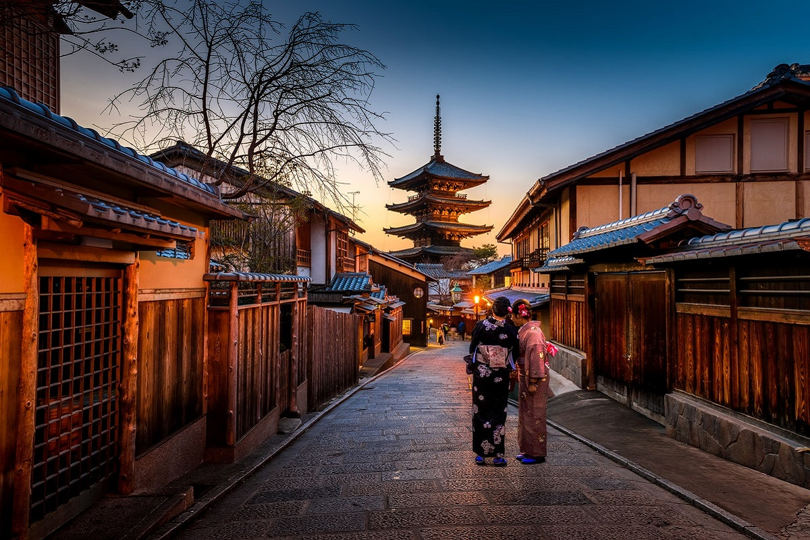
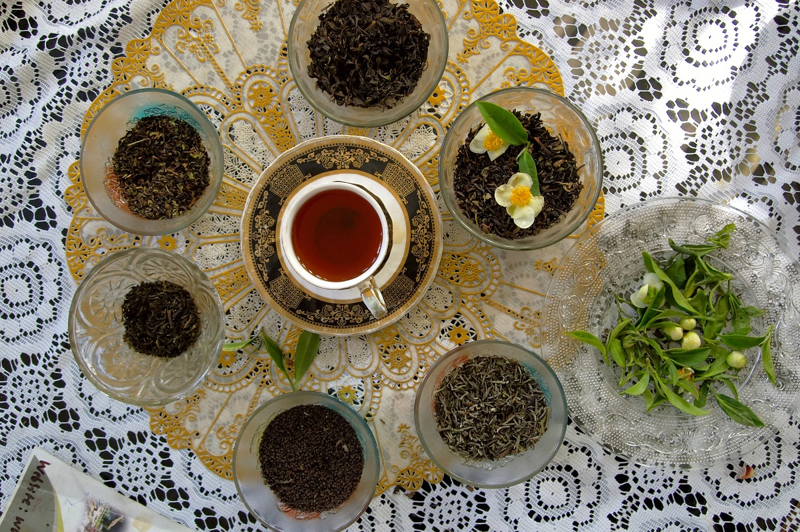
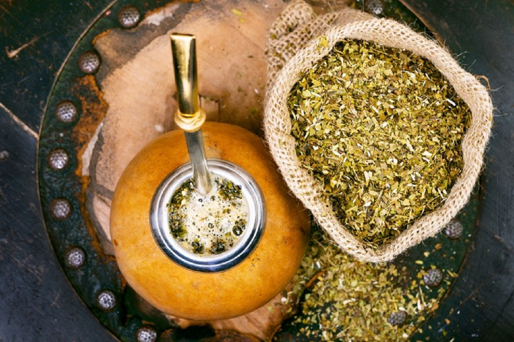
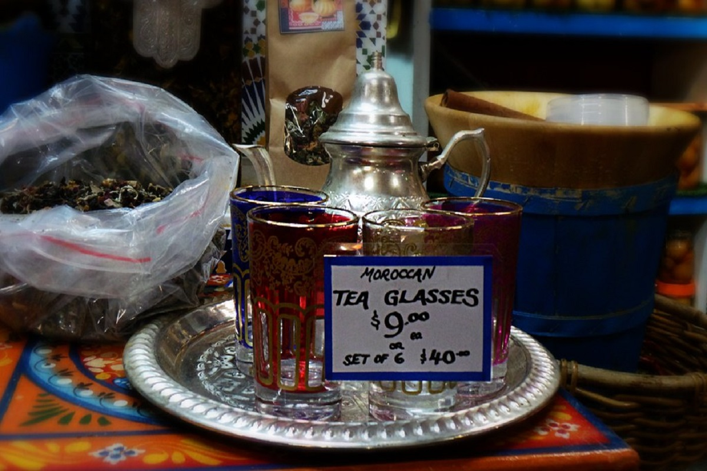
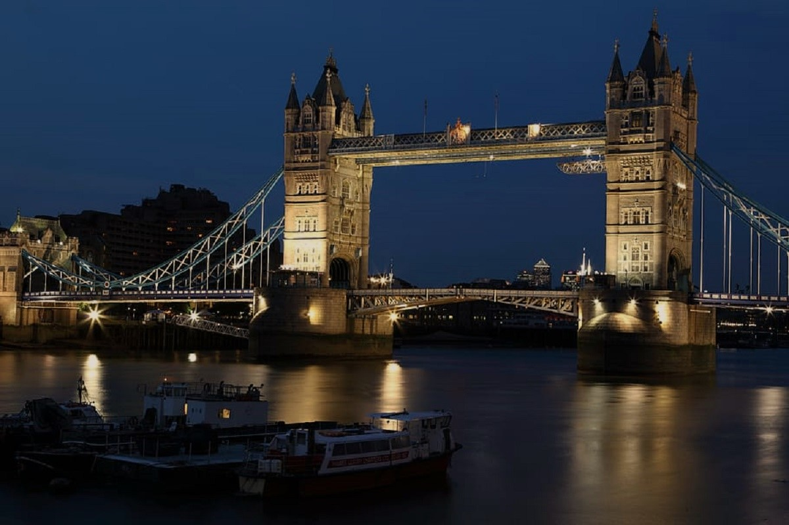
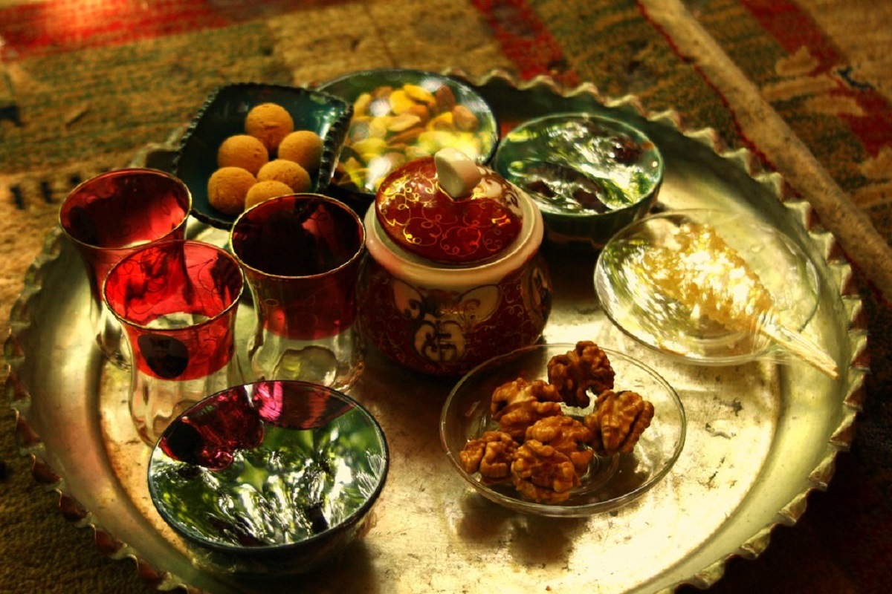
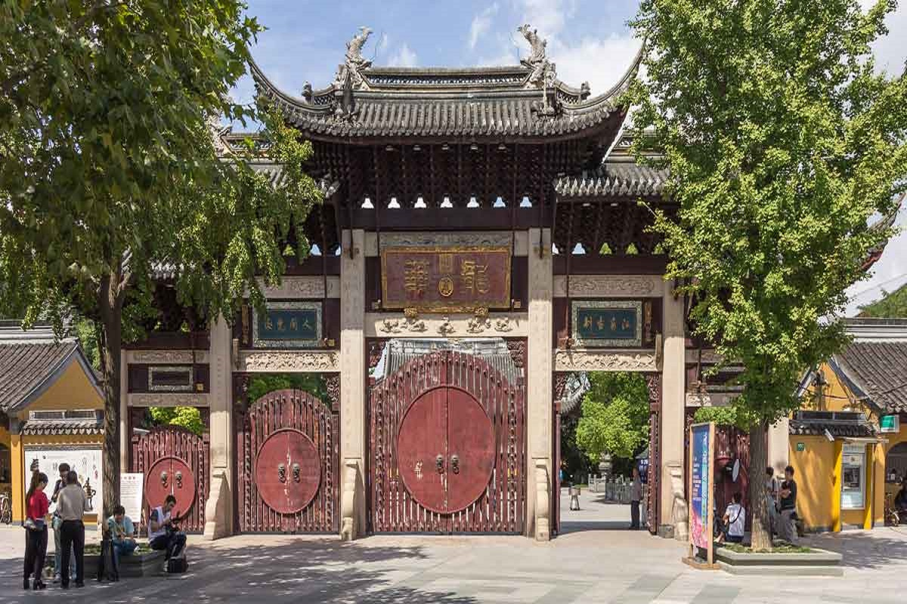

Select and hold one of the locations below to find out what the most popular type of tea is and how you say "tea" in their language!

Japan - お茶(ocha) - Sencha Green

India - चाय(chaay) - Masala Chai

Russia - чай(chay) - "Russian Caravan" Black

Argentina - té - Yerba Mate
Turkey - Çay - "Çaykur" Black

Moroco - شاي(shay) - Green Mint

England - tea - Assam Black

Iran - چای(chai) - Ceylon Black

China - 茶(chá) - Oolong